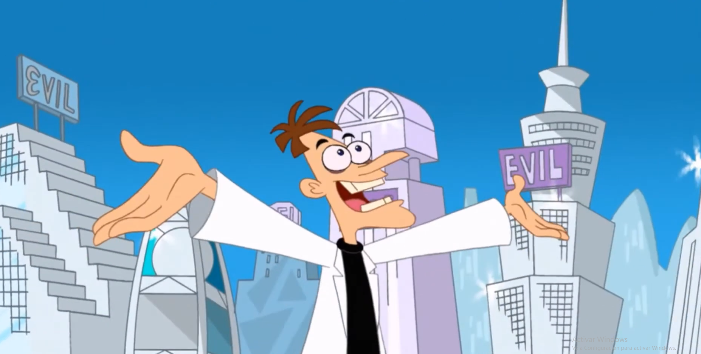

Doofania es una ciudad cómoda y segura para aquellos villanos y malvados que tienen planes malignos. Está resguardada por un ejército de robots contra agentes secretos y superhéroes, y está ubicada en la costa oeste. Tiene un clima cálido y húmedo, con vientos frescos de la costa y vistas maravillosas al mar. Como la ciudad está hecha específicamente para malvados, cuenta con centros de investigación y fábricas para desarrollar sus planes, además de calles limpias y seguras, sin tráfico ni ferias, para que puedan trabajar y descansar tranquilamente. También ofrece centros turísticos y actividades de entretenimiento únicas en el mundo, como el Día de la Ciencia, Ballonys Park, el Museo-inador y la Casa Doofania. Como si todo esto no fuera suficiente, Doofania es la única ciudad flotante del mundo: un milagro de la ingeniería moderna.
